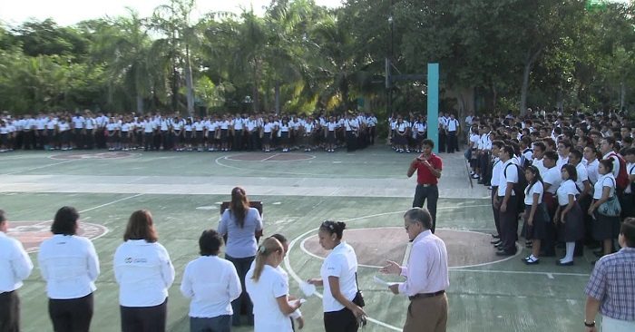

Somos Bachilleres
Ser orgullo Bachiller contiene una gran responsabilidad ya que con el fin se logra ver que los estudiantes logran los estudianbtes el sacar sus metas y sueños atraves de la institucion, por ello, con la ayuda de sus profesores se puede el observar que con ayuda de las asesorias que cada maestro ve que tiene un potencial los alumnos, por ello se puede ver que gracias a esto, El Colegio de Bachilleres Plantel Cancun Dos, obtengan varios reconocimientos a lo largo de el tiempo, asi el lograr un buen conocimiento, asi como el reconocimiento que pueden tener los alumnos de este plantel, ya que puede llegar la posibilidad de ir a concursos nacionales o mas, asi como sus propios trabajadores tienen valores, asi como el ser solidarias con nuestro género, debe ser un tema que invite a las mujeres a vincularse desde una perspectiva de respeto, amor y empatía... de nada sirve enfrentarnos y juzgar pues todas hemos experimentado la desigualdad social de distintas formas.
El Plantel Cancún dos cuenta con una amplia cantidad de profesores para impartir correctamente sus materias. Cada profesor cuenta con su aula para dar un buen servicio a sus alumnos y asi asegurarles un buen futuro. Cada profesor esta certificado en educación media superior y cumple las reglas y condiciones de su labor. Es muy raro que algun grupo de alumnos tenga las llamadas «Horas libres» a causa de que un profesor falte por cuestiones innecesarias. A diferencia de otras instituciones, estos profesores saben realizar correctamente su trabajo, es decir explican con claridad cada tema a estudiar y tratan a todos los alumnos por igual, respetando cada uno de sus derechos. Un ejemplo de estos buenos profesores, es el de laboratorio de informatica, este cuenta con su propia aula con aire acondicionado, un proyector, y alrededor de 50 aparatos de PC, en este laboratorio los alumnos aprenden a interactuar con las maquinas, a realizar actividades de ensayos o quiza a utilizar aplicaciones de microsoft. Pero no solo es el profesor ya mencionado, ya que este solo fue un ejemplo, pero asi como el podremos encontrar una amplia cantidad de buenos profesores dentro de este plantel, siendo fielmente un orgullo de bachilleres
